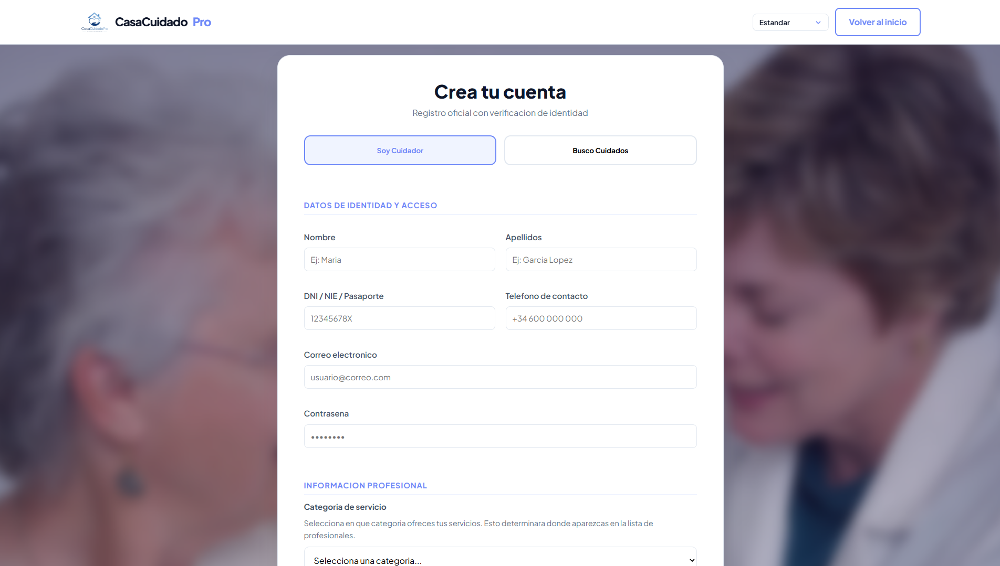
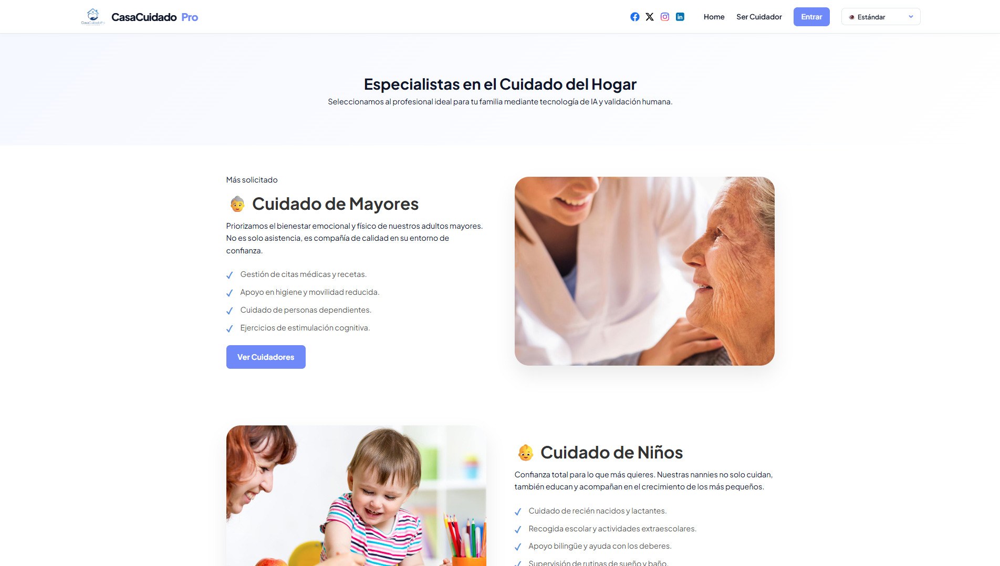
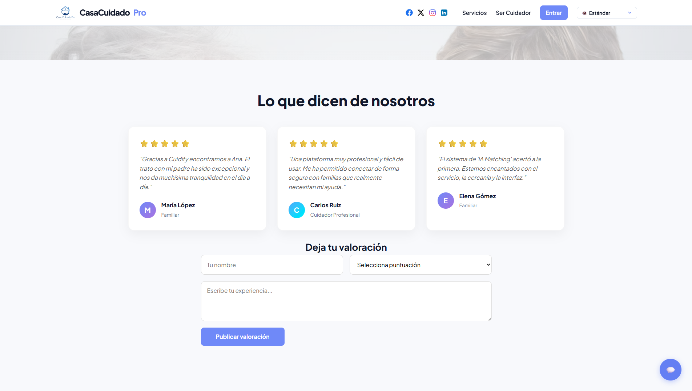
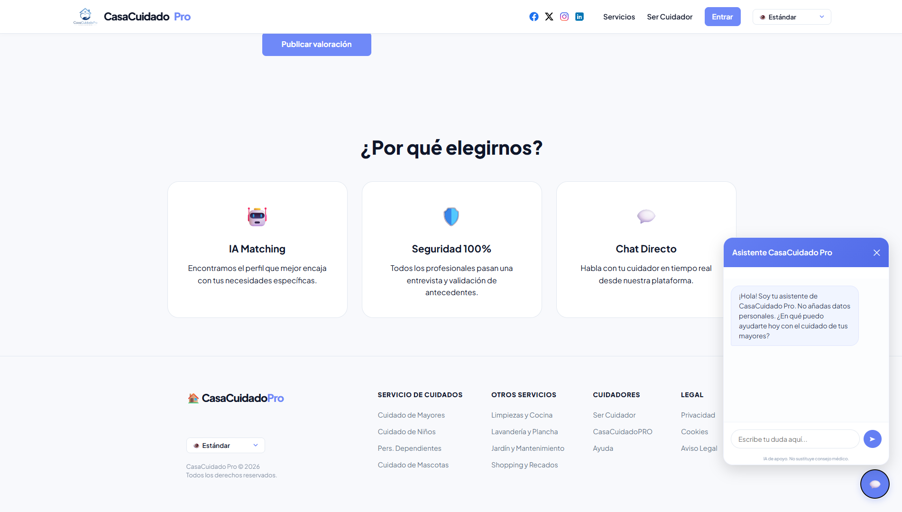
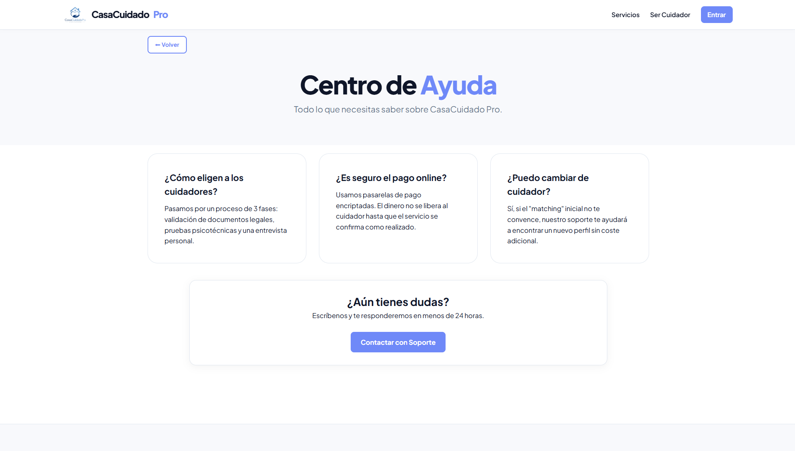
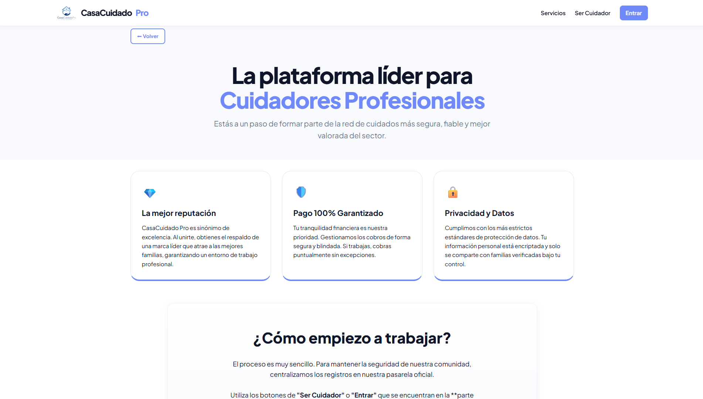

CasaCuidadoPro (TFG)

CasaCuidadoPro es una aplicación web desarrollada como Trabajo de Fin de Grado orientada a conectar cuidadores, familias y personas que requieren asistencia domiciliaria. El objetivo principal del proyecto es facilitar la búsqueda, gestión y contratación de cuidadores mediante una plataforma centralizada, accesible y pensada para resolver necesidades reales.
La aplicación permite el registro e inicio de sesión de usuarios, la creación y edición de perfiles personalizados, la gestión de información relevante para cuidadores y familias, así como la búsqueda de perfiles compatibles según diferentes criterios y necesidades.
Funcionalidades principales
- Registro e inicio de sesión de usuarios.
- Gestión de perfiles de cuidadores, familias y clientes.
- Búsqueda y filtrado avanzado de perfiles.
- Chatbot integrado con Inteligencia Artificial.
- Sistema de valoraciones y opiniones almacenadas en base de datos.
- Panel de perfil editable para cada usuario.
- Modos de accesibilidad para distintos tipos de daltonismo.
- Modo de alto contraste.
- Páginas legales de privacidad, cookies y aviso legal.
- Almacenamiento y gestión de datos mediante base de datos relacional.


Tecnologías utilizadas
Node.js, JavaScript, HTML, CSS, PostgreSQL, GitHub, integración de Inteligencia Artificial, diseño UI/UX y accesibilidad web.
Aprendizajes obtenidos
Este proyecto me permitió consolidar conocimientos de desarrollo Full Stack, diseño de bases de datos, autenticación de usuarios, accesibilidad web e integración de herramientas basadas en Inteligencia Artificial. También supuso mi primera experiencia desarrollando una solución de software completa orientada a un caso de uso real.
Galería del proyecto



